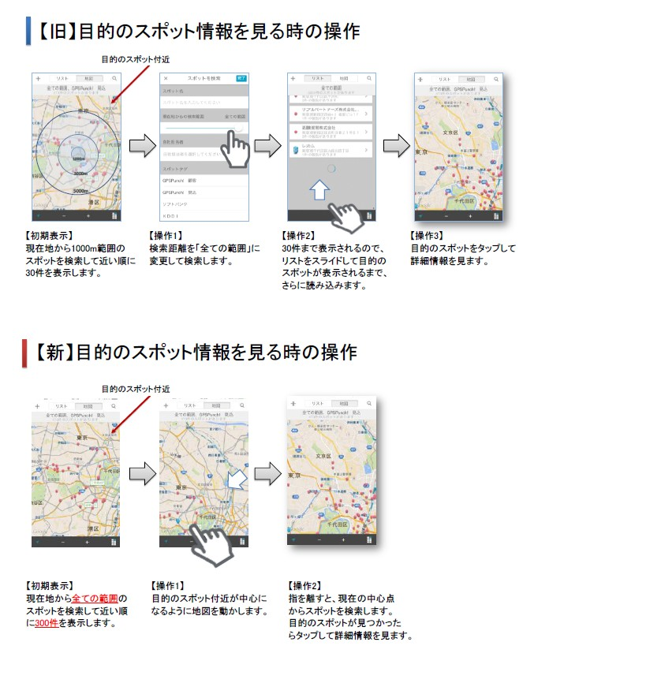

最新情報¶
アプリのスポット機能改善 （未リリース）2015年1月中旬予定¶
主な変更点¶
スポット検索の強化¶
- キーワード検索
- 従来はキーワードに一致するスポット名を検索するだけでしたが、以下のように変更します。
- 名前、カナ、コード、所在地、電話番号、コメントを対象に検索するようにします。 ※ 名前を優先とします。
- 検索結果が300件を超える場合は、地図の中心地から近い順に表示します。
- 「現在地からの検索範囲」の撤廃
- 従来はスポット検索の際に、現在地からの検索範囲（1000m,3000m・・・)を選択して検索する必要がありましたが、これを撤廃して以下のように変更します。
- 地図の中心点から最大300件のスポットを検索します。

- ランドマーク検索の追加
- スポット地図画面にランドマーク検索機能を追加します。
- 地名やランドマークを入力して検索すると、地図の中心地点が最初にヒットした地名、ランドマークになります。
- その位置を中心に最大300件のスポットを検索します。

- 操作の変更点
- 従来の検索方法との違いは以下のようになります。
- 手順が簡略化され、現在地から離れたスポットも探しやすくなります。
